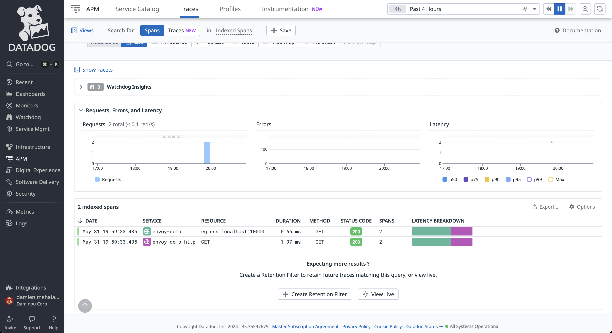
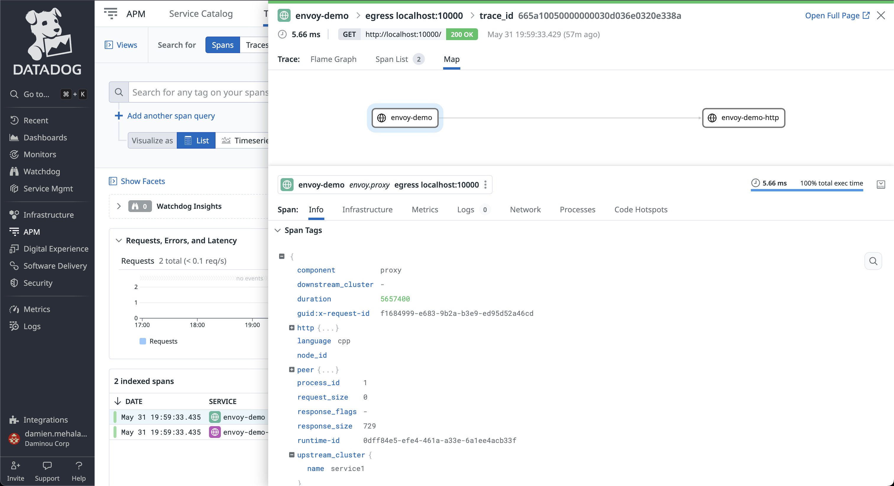

Datadog tracing
Note
Before proceeding, please ensure you have a Datadog account set up. If you don’t already have one, you can sign up for Datadog here.
- curl
Used to make HTTP requests.
The Datadog tracing sandbox demonstrates Envoy’s request tracing capabilities using Datadog as the tracing provider.
This example includes a Datadog Agent which will forward to Datadog’s backend traces sent from Envoy and the upstream HTTP service.
The envoy service is exposed on port 10000 and the request flow is as follow:
User ->
envoy->http
The Envoy proxy is configured (envoy.yaml) to generate and propagate tracing context to upstream services and also to
report tracing data to the Datadog Agent through an Envoy cluster named datadog_agent.
Each span records the latency of upstream API calls as well as information needed to correlate the span with other related spans (e.g., the trace ID).
Step 1: Build the sandbox
Change directory to examples/datadog-tracing in the Envoy repository.
To build this sandbox example, and start the example services run the following commands:
$ pwd
envoy/examples/datadog-tracing
$ export DD_API_KEY=<YOUR_API_KEY>
$ docker compose pull
$ docker compose up --build -d
$ docker compose ps
Name Command State Ports
-----------------------------------------------------------------------------------------------------------
datadog-tracing-dd-agent-1 "/bin/entrypoint.sh" running 8125/udp, 0.0.0.0:8126->8126/tcp
datadog-tracing-envoy-1 "/docker-entrypoint.…" running 10000/tcp, 0.0.0.0:10000->1337/tcp
datadog-tracing-http-1 "node --require dd-t…" running 0.0.0.0:8080->8080/tcp
Step 2: Make a request to http
Now send a request to the HTTP service, by calling http://localhost:10000.
$ curl localhost:10000
{
"service": "http",
"headers": {
"host": "localhost:10000",
"user-agent": "curl/7.81.0",
"accept": "*/*",
"x-forwarded-for": "172.16.14.142",
"x-forwarded-proto": "http",
"x-envoy-internal": "true",
"x-request-id": "cfa52b85-8660-9532-b347-bd484da76166",
"x-envoy-expected-rq-timeout-ms": "15000",
"x-foobar-banana": "",
"x-datadog-trace-id": "13944358220549386131",
"x-datadog-parent-id": "13944358220549386131",
"x-datadog-sampling-priority": "1",
"x-datadog-tags": "_dd.p.tid=663fe98600000000,_dd.p.dm=-0",
"traceparent": "00-663fe98600000000c1844febd4a4ef93-c1844febd4a4ef93-01",
"tracestate": "dd=s:1;t.dm:-0"
}
}
Step 3: View the traces in Datadog UI
Log in your Datadog account and navigate to APM tracing page.
Click on any of the trace with the service name envoy. From here you can explore the paths taken by the requests, as well as the latency incurred at each hop,
and other contextual information.
Note the Datadog tracer identifies the Envoy proxies by the name provided in the tracing.provider.typed_config.service_name configuration.
You can also explore the map graph to view relationships between nodes and the path of traces.
See also
- Request tracing
Learn more about using Envoy’s request tracing.
- Datadog
Datadog website.
- OpenTelemetry tracing
OpenTelemetry tracing sandbox.